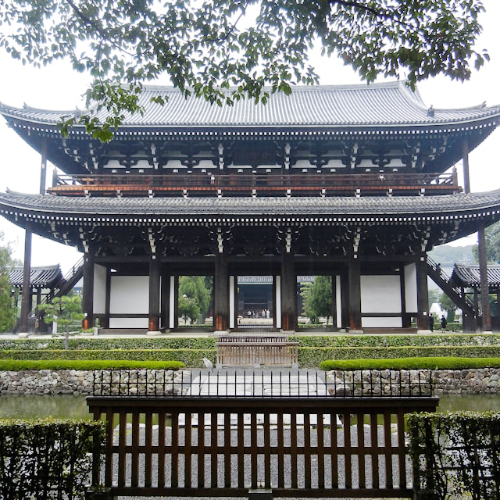

Tofuku-ji Temple – Kyoto's Historic Zen Temple
Tofuku-ji Temple (東福寺) is a renowned Zen temple in Kyoto, celebrated for its serene gardens, ancient architecture, and vibrant autumn foliage. Established in 1236, Tofuku-ji is one of the largest and most important temples in Kyoto, attracting visitors year-round with its stunning design and tranquil atmosphere.
A Zen Retreat in Kyoto
The temple’s main hall, known as Hojo, overlooks a magnificent dry landscape garden, and the surrounding area features lush, meticulously designed gardens. In autumn, the maple trees around the temple’s Tsutenkyo Bridge put on a breathtaking display of red and gold, drawing photographers and nature enthusiasts from around the world.
Tofuku-ji's Famous Gardens
Tofuku-ji’s Hojo Garden and Zen Gardens are an integral part of its serene atmosphere. The gardens are designed in the Japanese Zen style, with raked gravel, moss, and stones arranged to evoke feelings of tranquility. The Fujita Garden inside the temple offers peaceful spaces for meditation and contemplation, with its beautiful koi pond.
How to Get to Tofuku-ji Temple
- 🌸 From Kyoto Station: Take the JR Nara Line to Tofukuji Station (about 5 minutes). The temple is a 10-minute walk from the station.
- 🌸 Direct access from Tofukuji Station to the temple’s entrance.
- 🌸 Opening hours: The temple is open from 9:00 AM to 4:00 PM, with extended hours during the autumn foliage season (November).
- 🌸 Best photo spots: Tsutenkyo Bridge, Hojo Garden, and the temple’s maple trees during autumn.
Why Tofuku-ji Temple is a Must-Visit in Kyoto
Tofuku-ji is an essential stop for anyone interested in traditional Japanese Zen architecture and gardens. Whether you're exploring Kyoto’s rich history or admiring the stunning colors of the autumn foliage, this peaceful temple offers a profound cultural experience and a moment of tranquility.
Tags: Tofuku-ji Temple, Kyoto Zen temples, Kyoto gardens, autumn colors Kyoto, historical temples Japan.
Planning to visit Tofuku-ji Temple?
To get the most immersive and insightful experience, we recommend booking a certified local private guide from our team. All our guides are licensed professionals officially recognized by the Japanese government, offering personalized tours tailored to your interests. Please contact your selected guide in advance to confirm availability and get expert assistance for your trip.